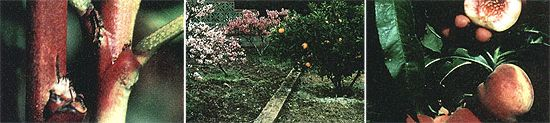

(PHOTOS BY THE AUTHOR)
LEFT TO RIGHT: This greenish dwarf fruit tree twig has twice as many flower buds as its reddish standard cousin. Dwarf trees are ornamental as well as food-bearing additions to your home. Just look at all the fruit on this miniature Heavenly White peach tree!